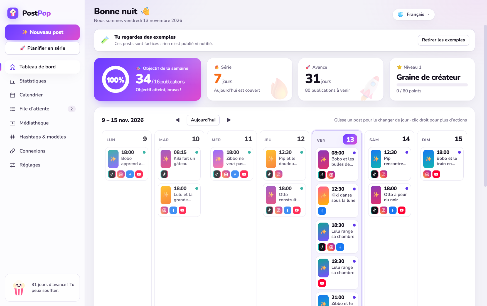
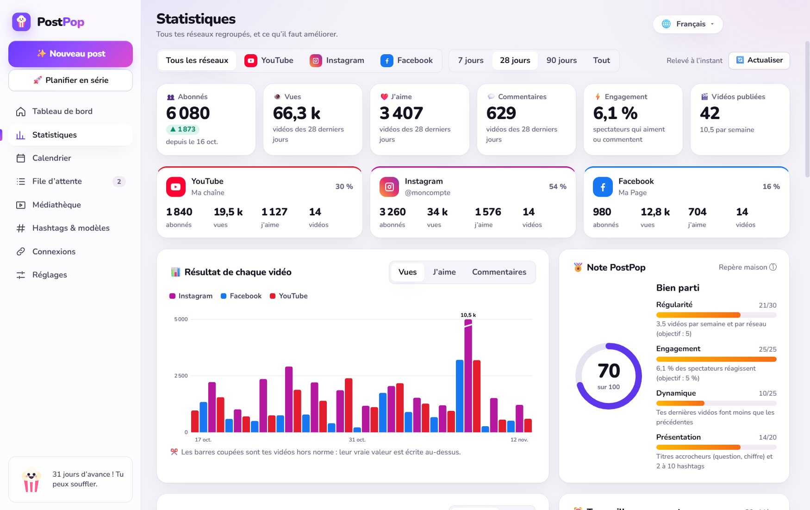

Gratuit pour de vrai
Trois réseaux, la programmation et les statistiques, sans carte bancaire. Les outils en ligne font souvent payer chaque réseau.
Pour les créateurs de Shorts et de Reels
PostPop publie tes vidéos sur YouTube, Instagram et Facebook, tout seul, au jour et à l'heure que tu choisis. Tu prépares ta semaine en dix minutes, puis tu éteins ton PC.
Les 200 premiers inscrits auront accès à l'offre Fondateur : Pro à vie pour 79 €.

Trois réseaux, la programmation et les statistiques, sans carte bancaire. Les outils en ligne font souvent payer chaque réseau.
PostPop tourne sur ton PC. Il envoie tes vidéos directement à YouTube, Instagram et Facebook, sans passer par nos serveurs : nous n'en avons pas.
Je l'ai construit pour mes propres chaînes, parce que publier la même vidéo à la main sur trois réseaux me prenait mes soirées.
Glisse tes vidéos, choisis les jours et les heures. YouTube, Instagram et Facebook publient à l'heure dite, même ordinateur éteint.
Abonnés, vues, j'aime et commentaires des trois réseaux réunis sur un seul écran, ou réseau par réseau.
Ta meilleure heure, ton meilleur jour, la vidéo qui cartonne et pourquoi. Des phrases simples, avec quoi faire ensuite.
L'IA regarde ta vidéo et propose trois textes dans ton style, avec les hashtags et le premier commentaire.
PostPop répond à tes nouveaux commentaires dans la langue de chacun, et laisse de côté les insultes et les arnaques.
Français, anglais, espagnol, portugais, russe, chinois, hindi, bengali, arabe et ourdou. Tu changes d'un clic.

Les outils en ligne coûtent souvent 15 à 25 $ par mois pour trois réseaux. PostPop commence à zéro.
0 €
Le plus choisi
7,99 € par mois
ou 59 € par an
79 € une fois
200 places, au lancement seulement
Windows 10 et Windows 11. Pas encore de version Mac.
Non. Tu te connectes sur les pages officielles de Google et de Meta, et PostPop reçoit seulement l'autorisation de publier. Tu peux la retirer quand tu veux.
Non pour YouTube et Facebook : ils gardent ta vidéo et la publient à l'heure. Pour Instagram, un petit relais gratuit sur ton propre compte Google s'en charge.
TikTok ne laisse pas un petit logiciel publier à ta place. PostPop te prévient à l'heure, copie ta légende et ouvre la bonne page : vingt secondes à la main.
Il sert à une seule chose : te prévenir du lancement. Il n'est ni vendu ni partagé, et tu peux le faire supprimer à tout moment. Le détail est dans les règles de confidentialité.
Un seul e-mail, le jour où PostPop est prêt à être téléchargé.